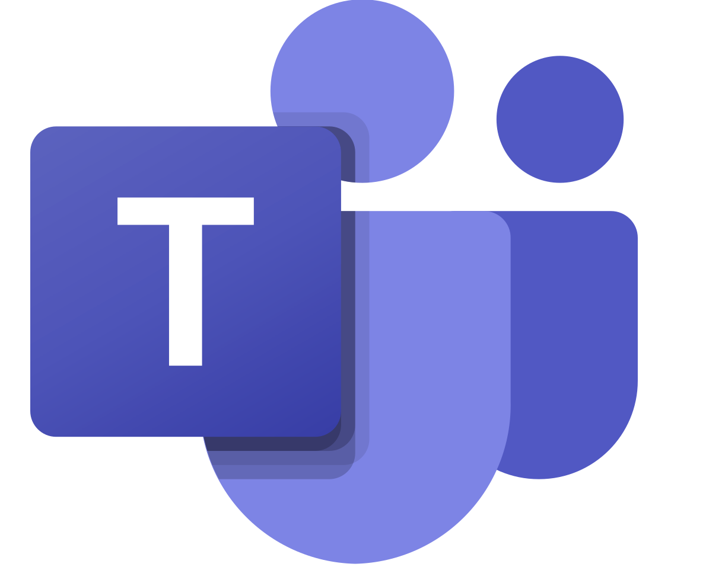

はじめに
コミュニケーションは、組織やチームの成功に欠かせない要素です。 明確な情報共有と円滑な対話が、業務の効率化やミスの防止につながります。 このページでは、コミュニケーションを改善するための具体的な方法やツール、実際の成功事例を紹介します。
コミュニケーションの重要性
効果的なコミュニケーションは、誤解や情報の断絶を防ぎ、信頼関係の構築に寄与します。 正確な情報共有により、各メンバーが自分の役割を理解し、業務をスムーズに進めることが可能となります。 また、活発な対話がイノベーションや問題解決を促進し、全体のパフォーマンスを向上させます。
改善のための基本ポイント
コミュニケーション改善に向けた基本的なポイントを以下にまとめました。 これらを実践することで、日常のやりとりがより明確で効率的になります。
- 明確な情報伝達: 重要な内容は箇条書きにして整理し、要点をはっきり伝えましょう。
- フィードバックの促進: 定期的に質問や確認を行い、相手の理解度を把握します。
- 定例ミーティングの実施: 定期的な会議で進捗や問題点を共有し、解決策を話し合います。
- マニュアルの整備: 業務プロセスやルールを文書化し、全員で共有することで認識のズレを防ぎます。
おすすめツールとアプリ
コミュニケーションを円滑にするためのツールを活用することで、情報共有や対話がよりスムーズになります。 以下は、効果的なコミュニケーションをサポートするツールの一例です：
- Slack: チーム内のリアルタイムメッセージングツール。トピックごとのチャンネルで効率的に情報を共有できます。
-
 Zoom:
オンライン会議ツール。遠隔地のメンバーとも顔を合わせてコミュニケーションが可能です。
Zoom:
オンライン会議ツール。遠隔地のメンバーとも顔を合わせてコミュニケーションが可能です。
-  Microsoft Teams: オフィススイートと統合されたチャット・会議ツール。情報の一元管理に最適です。
追加のヒント
- 会議中に重要なポイントをメモし、後で共有する習慣をつける。
- 対面だけでなく、メールやチャットでのフォローアップを徹底する。
- 定期的なフィードバックセッションを設け、改善点を話し合う。
- 全員が同じ情報を共有できるよう、ドキュメントやマニュアルを整備する。